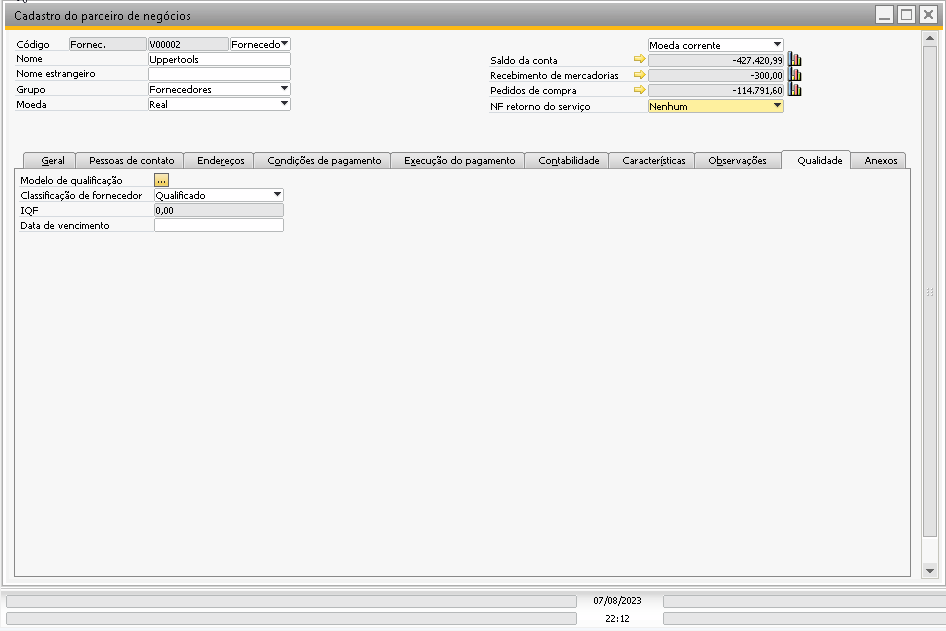
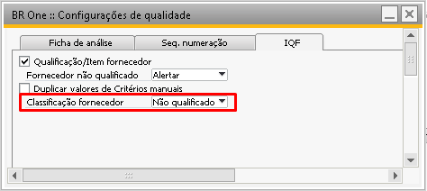

Cadastro de parceiros de negócios
No cadastro de parceiros de negócios, apenas para Fornecedor a aba Qualidade será exibida. Esta é a aba onde os modelos de qualificação são vinculados.

Para fornecedores que não possuem um Modelo de qualificação vinculado, por padrão, os campos Modelo de qualificação, IQF e Data de vencimento não terá informações.
Ao selecionar para vincular um Modelo de qualificação, é necessário ter um modelo de qualificação definido como padrão.
{kind=link}
O campo Data de vencimento será preenchido com a data da última ficha de análise desse fornecedor.
O campo Classificação de fornecedor sempre virá conforme a configuração Classificação fornecedor das Configurações de qualidade -> aba IQF.

Por padrão este campo virá como Qualificado e será levado para todos os fornecedores existentes e para os novos cadastros, se for alterado para Não qualificado, todos os novos parceiros de negócio serão criados ou duplicados com esta classificação do fornecedor.
Os campos Classificação de fornecedor e Data de vencimento só poderão ser alterados no cadastro se possuírem as respectivas autorizações habilitadas para o usuário logado:
Alterar classificação (Qualificação de fornecedor)
Alterar data de vencimento (Qualificação de fornecedor)
{kind=link}
Ao duplicar um fornecedor:
independente do fornecedor duplicado ser ou não qualificado, o novo registro sempre virá conforme a configuração do parâmetro Classificação fornecedor;
independente do PN duplicado possuir ou não valor de IQF, o novo registro virá zerado;
independente do PN duplicado possuir ou não uma data de vencimento, o novo registro virá em branco.
Caso o PN duplicado possua um modelo, o novo registro receberá o mesmo modelo e sua descrição, caso não possua, o novo registro virá em branco.
{kind=link}
Ao alterar o campo Classificação do fornecedor, a tela Motivo será aberta e é um campo obrigatório.

Se o usuário fechar a tela de cadastro de parceiro de negócios sem que tenha preenchido o motivo, todas as telas são fechadas (Cadastro de PN e Motivo).
O motivo será salvo na tabela @UPQ_OLAC, campo U_UPQ_Motivo.